Ember Command
game design document — last updated 2026-07-19 · see ARCHITECTURE.md for the code map
Concept
An abstract real-time strategy game inspired by Warcraft II. You command at scale, not at the unit level — standing orders and high-level taps instead of clicking units around a map. It should feel like being a general, not a babysitter.
Principles
- Orders are postures, not clicks. Assign once; the simulation loops it forever. The player never repeats an order.
- The economy runs itself. Idle and new workers auto-assign (gold first, wood when gold is gone). Player taps rebalance labour; they never allocate from scratch.
- Every tap responds. A command that can't run stays visible, stays tappable, and explains itself in an error toast. Fading is reserved for real unavailability (missing tech, no worker) — never for "can't afford it right now".
- Pressure beats stockpiling. Raids scale with the day counter, so banked resources have an opportunity cost, WC2-veteran style.
- Real WC2 numbers. Costs and build/train times are the actual Tides of Darkness values.
Economy & Workers
done — Resource nodes are finite and have a distance from the town hall that lengthens each harvest cycle (gather time + round-trip travel). Workers pin to a node until it depletes, then go idle and auto-reassign. Depleted nodes disappear from the UI.
| Node | Capacity | Distance |
|---|---|---|
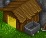 Gold mine | 20 000 | 1 (near) |
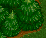 Forest | 25 000 | 1 (near) |
| Far forest | 25 000 | 5 (slow cycles) |
Worker sourcing is priority-ordered, so a tap always does the most sensible thing:
- Harvest tap on a node pulls: idle worker → same-resource worker from another node → other-resource worker.
- Construction (from the Town Hall) pulls: idle worker → a worker from the most plentiful node — and returns it to that node when the build finishes or is cancelled.
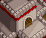
Structuresdone — Buildings are built by a worker (auto-chosen, see above) via the Town Hall's construct menu. They stack as one tile with a count badge; in-progress builds show as tappable cancel-and-refund chips. Real WC2 build times make construction a genuine commitment.
| Structure | Cost | Time | Effect | Status |
|---|---|---|---|---|
| Town Hall | — | — | Trains workers, opens build menu, +4 supply | done |
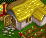 Farm | 500g 250w | 100s | +4 supply, stackable | done |
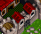 Barracks | 700g 450w | 200s | Trains footmen/archers; each adds +1 training slot and +5 queue depth | done |
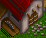 Lumber Mill | 600g 450w | 150s | Unlocks archers (and future lumber upgrades) | done |
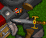 Blacksmith | 800g 450w | 200s | Buildable now; weapon/armor upgrades to come | todo |
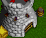 Tower | 550g 200w | 60s | Shoots raiders (3 dmg/volley); upgradable | done |
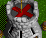 Guard Tower | 500g 150w | 140s | Tower upgrade (needs Lumber Mill), 8 dmg/volley | done |
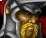
Units & Ordersdone — Units train with real WC2 times and costs; supply is reserved while queued. Army groups (not individuals) hold one of four standing orders.
| Unit | Cost | Time | Role |
|---|---|---|---|
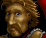 Worker (Peasant) | 400g | 45s | Harvest & build — auto-managed |
| Footman | 600g | 60s | Melee — power 3 |
| Archer | 500g 50w | 70s | Ranged — power 2, needs Lumber Mill |
| Order | Behaviour |
|---|---|
| Defend | Holds the base; soaks raids that get through (with towers) |
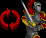 Patrol | Perimeter shield; intercepts raids before they hit the base |
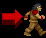 Explore | Uncovers the map; locating the enemy base unlocks Attack |
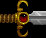 Attack | Continuously grinds down the (slowly rebuilding) enemy base |
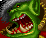
Threat & Victorydone — Raiding parties are real grunts with hp, damage, and an attack cooldown, shown as danger tiles at the bottom while active. They approach (patrol intercepts early), then exchange volleys: they target your warriors first, then the towers shooting at them, then workers, then raze the remaining buildings one by one (town hall last). Grunts get tougher and hit harder each day. Towers shoot back; the error toast raises the alarm. Reducing enemy base strength to zero via Attack logs victory.
TIME_SCALE (currently 0.3) — one constant to retune the whole game's tempo.Upgrades (planned)
The Guard Tower upgrade done established the pattern: a single button on the source structure, timed, cancellable with refund. Planned on the same pattern, all idea:
- Blacksmith: weapon/armor tiers 1–3 for footmen/archers
- Lumber Mill / Town Hall: harvest-efficiency bumps
- Hall tiers: Town Hall → Keep → Castle as the pacing lever against raid scaling — each tier unlocks units/structures/upgrades
Raid posture (harass economy) distinct from Attack (kill the base). Needs prototyping to validate feel.Persistence
idea — autosave to local storage, resume on reload, no explicit load step. Not implemented; every reload is a fresh start.
UI Conventions Established So Far
Patterns already built — extend these rather than inventing new ones:
- Grouped tiles — anything stackable renders as one compact tile with a
count-badge, never one tile per instance. - Radial progress rings — canvas conic-gradient rings (
radialProgressCanvas), stacked semi-transparent when several timers share a tile, animated smoothly between ticks. - Job chips — every in-flight timed job (training, construction, upgrade) is one tappable chip: its own ring, tap to cancel and refund.
- Icon-only commands — WC2-style command card; cost renders as an overlay strip of icon+number pairs, left-aligned; number-key hotkeys on desktop, hidden on touch.
- Errors in the toast, events in the log — a refused tap explains itself in the floating error label; the menu log narrates gameplay. Fading marks non-resource unavailability only.
- Instant touch — selection on
pointerupwith a move threshold (so scrolling the node row doesn't select); zoom guards exempt interactive controls; 14px minimum font. - Cheat toggles —
fast train/fast harvestmultiply timers byCHEAT_SPEED; keep them working, they're the dev loop.
Working With This Codebase
ARCHITECTURE.mdis the code map: data tables (BUILDINGS/UNITS/ARMY), the unified job system, recipes for adding content.CLAUDE.mdhas the working conventions.- No build step, no framework.
gameis the single state object;render()fully rebuilds — don't add diffing.